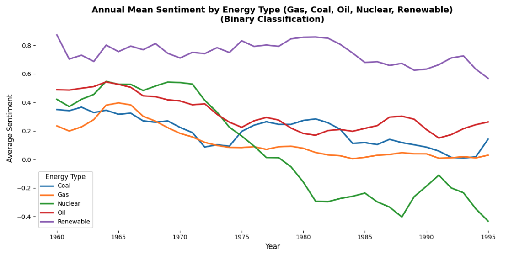

Research
Research Interests
Digital history
My research focuses on digital text analysis to study conceptual change over time. I am particularly interested in the circulation of knowledge across different domains—such as science, politics, industry, and popular culture. How can traces of eugenic thinking be found in Dutch public discourse, for example, even though eugenics was condemned by large parts of society? Or how did Dutch companies and organizations interpret the American notion of “efficiency” after World War I, and how did the philosophy of efficiency come to shape ever more domains of life? How has the food industry defined concepts like “healthy food”—or, for that matter, “sustainable food”—in changing ways over time?
I like developing and using computational methods to study questions like these, because they enable me to map conceptual changes in textual data that covers large spans of time and/or that allows me to compare different domains of life or different countries.
My latest projects were, first, the Semantics of Sustainability (2022-2025, funded by the Nl eScience Center, which leverages LLMs to study the Dutch public discourse around “sustainability” (together with Parisa Zahedi, Carsten Schnober, José Angel Daza, Mees van Stiphout and Pablo Merayo Montes. Second, I have set up a machine learning pipeline to do a sentiment analysis of the discourse around fossil fuels, nuclear energy and renewable energy in Dutch newspapers between 1950 and 1995 (funded by the UU Research IT Innovation Fund 2022 and the UU Applied Data Science Seed Fund 2024, together with Jaap Verheul, Gertjan Plets, Anastasia Giachanou, Leonardo Vida, Parisa Zahedi and Shiva Nadi Najafabadi. Our code can be found on our GitHub repo.
For an overview of my digital history projects and those of my colleagues at Utrecht University, check our Digital History website.
I regularly advise cultural heritage institutions on matters concerning digitisation and digital use of cultural data.

Reproducibility
Together with my colleague Pieter Huistra I’m studying the opportunities and limits of reproducibility for historical scholarship. Together we have written a White Paper that explains our perspective on the matter, based on an experiment in reproductions that we ran together with a group of students. The project and paper have received a great deal of interest. We have given multiple papers and keynotes, taught courses and we are still further developing our perspective in new publications.
History of concepts and history of science
I have a special interest in the theory of conceptual history, especially that of Reinhart Koselleck. I enjoy finding ways to put his theories around time experience to the test. I have published about this in Contributions to the History of Concepts (‘Something Happened to the Future. Reconstructing Temporalities in Dutch Parliamentary Debate, 1814-2018’) and in Digital Scholarship in the Humanities (‘Everyday memory: A computational analysis of changing relations between past and present in Dutch newspapers in the twentieth Century’).
I was trained as historian of science, having writing my master thesis about the Austrian theoretical physicist Paul Ehrenfest and my PhD thesis about the discovery of vitamins and the advent of nutrition science in the Netherlands in the first half of the twentieth century. The latter has left me with an enduring interest in food history.
 {width=20}
{width=20}
Grants, fellowships and awards
2024 | Grant from the UU Education Incentive Fund for Transferable pedagogies for an Open Science mindset and skillset (as co-PI; 250,000€)
2023 | Seed money grant from the UU Aplied Data Science focus Area for Finding Sentiments in Factual Texts: Evaluation of Approaches for Analyzing Sentiments in Historical Newspapers (7,500€)
2022 | Richard Deswarte Prize in Digital History (1,000£)
2021 | Grant from the NWO / NL eScience Centre Open eScience Fund for The Semantics of Sustainability. Historicizing language models to study the conceptual history of sustainability in the Netherlands (in-kind equivalent of 300,000€)
2020/21 | Grant from the UU Fostering Open Science Practice Fund for CarbonCultures: Rewriting the fossil fuel history of the Netherlands (as co-PI; 25,000€)
2020/21 | Grant from the UU Fostering Open Science Practice Fund for Once more, with feeling. Replication to improve open knowledge production in the humanities (as co-PI; 25,000€)
2020 | Grant from the UU IT Innovation fund for Mining Historical Trajectories of Awareness: A machine learning approach to historicized sentiment mining (as co-PI; 25,000€)
2020 | Fellowship GW Sabbaticalfonds Frits van Oostrom (10,000€)
2019 | Winner of the UU Community Service Learning Contest for a teaching project to promote digital literacy (making podcasts on local Utrecht history) (2,500€)
2018/9 | Grant from the UU Focus area Applied Data Science for How formal information infrastructures solicit discourse – a text mining approach (as co-PI; 5,000€)
2015 | Researcher-in-residence fellowship at the Research Department of the Dutch National Library (KB), The Hague (3 months 1fte)
2011 | Research grant Max Planck Institute for the History of Science, Berlin (3 months 1fte)
Editorial, advisory and reviewing activities
Since 2023 | Member of the national advisory committee national Thematic Digital Competence Centre Social Sciences and Humanities (SSH)
Since 2023 | Member of the external editorial board of the Amsterdam Museum Journal
Since 2023 | Member of the jury of the Richard Deswarte Prize for Digital History
Since 2022 | Member of the advisory committee of the Fachinformationsdienst Benelux of the University Library of the University Münster
Since 2022 | Member of the board of the Royal Netherlands Historical Society KNHG
Since 2020 | Member (and since 2022 vice-editor-in-chief) of the editorial board of BMGN – Low Countries Historical Review
Since 2018 | Reviewer for Tijdschrift voor Geschiedenis, BMGN-LCHR, Digital Scholarship in the Humanities, Social History of Medicine, Historical Methods: A Journal of Quantitative and Interdisciplinary History, Endeavor
2023 | Member of the Dutch Research Council (NWO) VENI funding scheme review committee
2018-2020 | Member of the advisory committee of Digitised Newspaper Portal of the German Digital Library DDB
2014-2019 | Member of the editorial board of Studium, journal for the history of Dutch and Flemish history of science and medicine